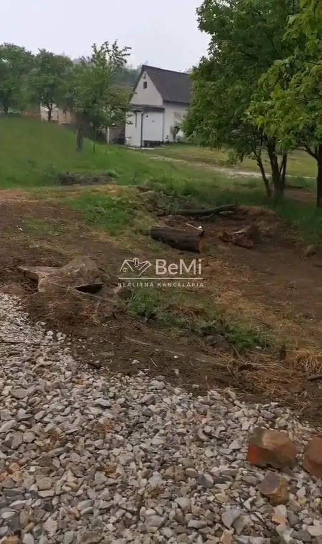
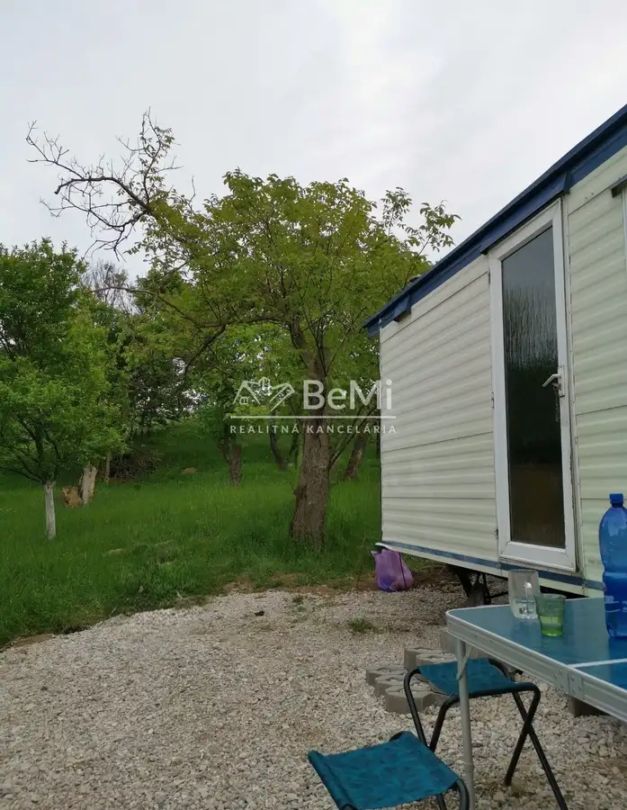
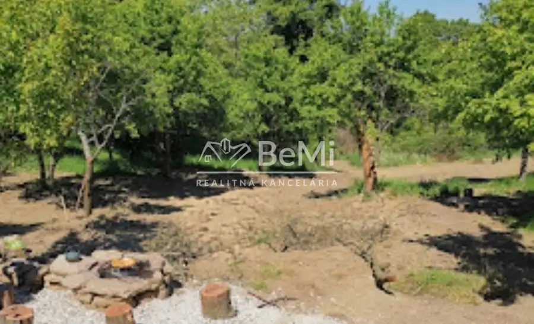
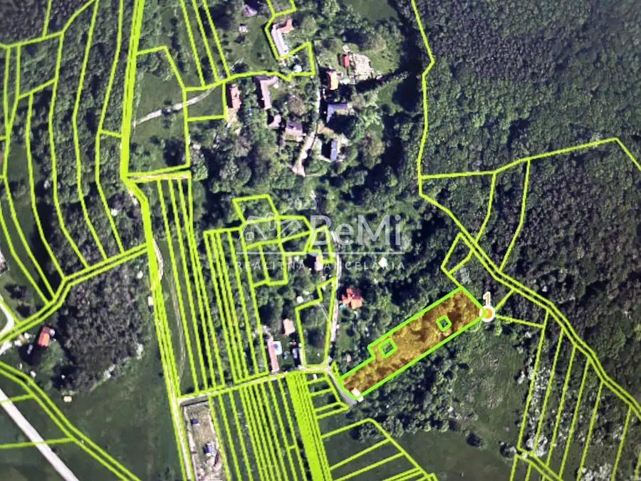
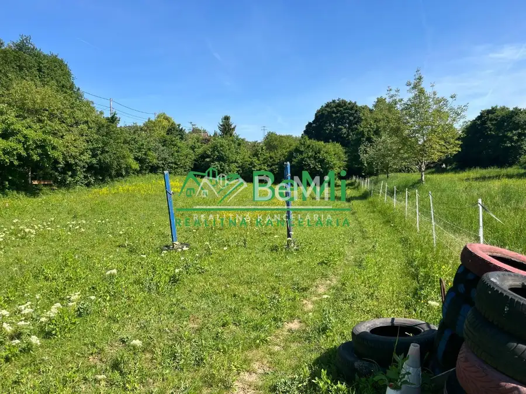
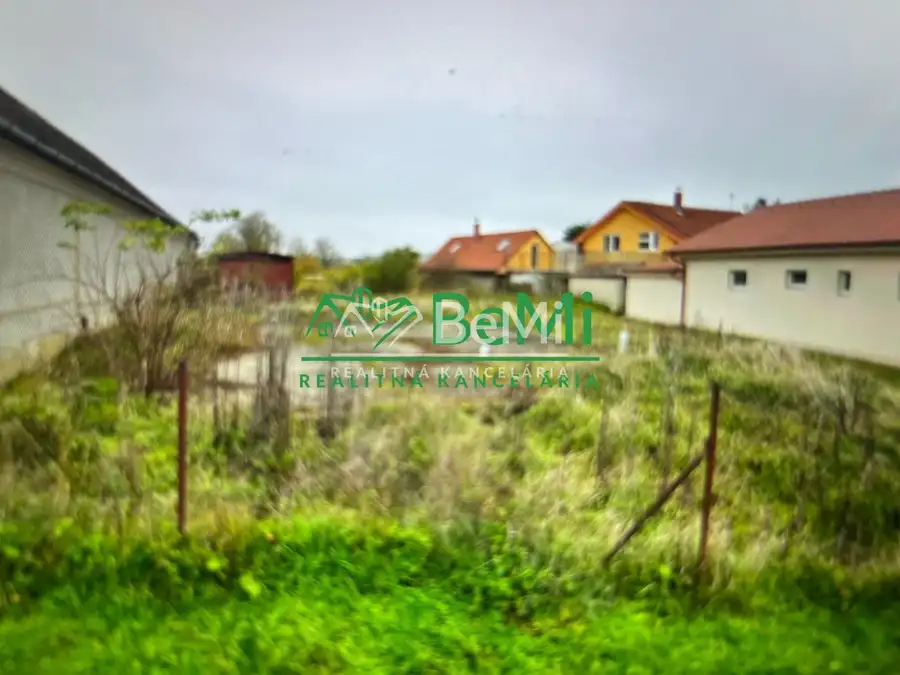
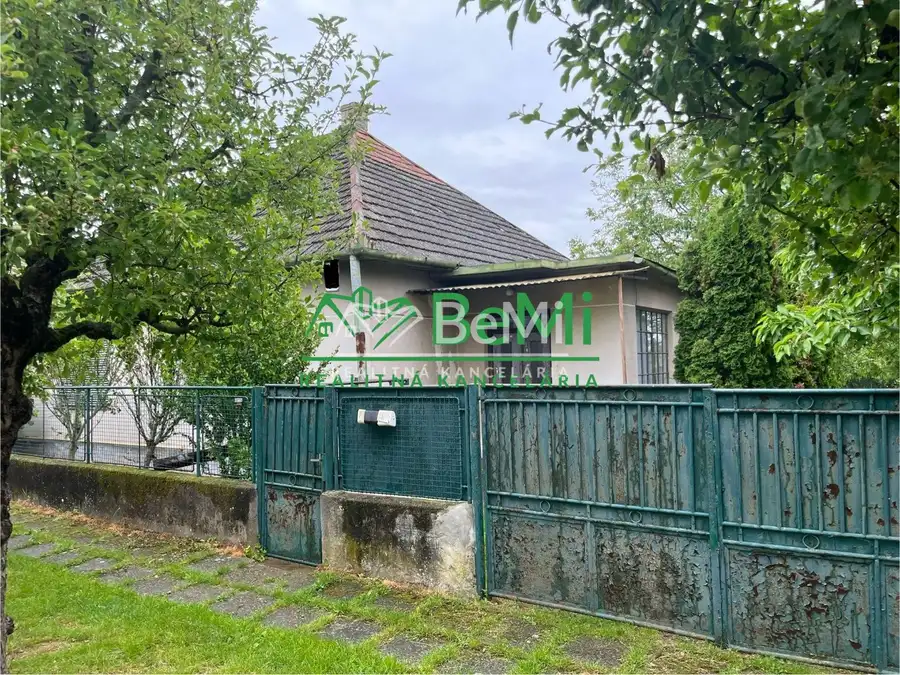

Predaj pozemok - Sobotište, SENICA ( 118-14-MIJK)
Sobotište




- VlastníctvoOsobné
O nehnuteľnosti
Predaj investičného pozemku v Sobotišti | 2 434 m² | možnosť rekreácie aj budúcej výstavbyPonúkame na predaj zaujímavý slnečný pozemok v obci Sobotište, okres Senica. Obec sa nachádza približne 7 km od Senice a 45 km od Trnava. Celková výmera pozemku je 2 434 m² s orientačnými rozmermi 26 m x 108 m. Pozemok sa nachádza mimo zastavaného územia obce a ponúka pokojné prostredie, súkromie a široké možnosti využitia.Charakter pozemku:vrchná časť pozemku je rovinatá,spodná časť je mierne svahovitá,slnečný pozemok s príjemným prírodným charakterom,priamo pri pozemku sa nachádza elektrický stĺp,prístup zabezpečuje obecná prístupová cesta,pri pozemku sa nachádza okamžitý vstup do lesa,možnosť vychádzok a turistiky na obe strany od pozemku.Ide o ideálne miesto na oddych, rekreáciu a únik od ruchu mesta.Druh pozemku:2 329 m² – záhrada63 m² – ostatná plocha42 m² – ostatná plochaVyužitie pozemku:Pozemok je vhodný najmä na:pestovanie ovocia, zeleniny a okrasnej zelene,rekreačné účely,hospodárske alebo skladové využitie,výstavbu víkendových chát.Na časti evidovanej ako „ostatná plocha“ bolo v minulosti vydané stavebné povolenie na výstavbu 2 rekreačných chát. Kedysi sa na pozemku nachádzal rodinný dom, čo môže predstavovať zaujímavý potenciál pre budúce obnovenie výstavby po splnení podmienok príslušných úradov.Výhody pozemku:slnečný pozemok s kombináciou roviny a svahu,pokojná lokalita a súkromie,prístup k lesu priamo pod pozemkom,elektrina pri pozemku,obecná prístupová cesta,inžinierske siete v blízkosti s možnosťou pripojenia,dobrá dostupnosť do Senice,investičný potenciál,vhodné na rekreáciu, záhradu alebo víkendové bývanie.Pozemok je ideálny pre ľudí, ktorí hľadajú priestor, pokoj a možnosť realizácie podľa vlastných predstáv.Cena:53 000 €Kontakt:Milan JakabTel.: 0904 247 504E-mail: jakab@realitybemi.skProstredníctvom nášho finančného poradcu Vám radi pomôžeme s financovaním kúpy nehnuteľnosti.Cena je vrátane provízie za kompletný servis a je schválená majiteľom.
Parametre
- Druh
- Rekreačný pozemok
- Dátum zverejnenia
- 27. 05. 2026
- Plocha pozemku
- 0 m²
- Typ
- Predaj
- Vlastníctvo
- Osobné
Kde to je


Mohlo by Vás zaujímať

PozemokNové 294 800 €Predaj pozemok - Levice (003-14-MIJK) Levice 7220 m²
PozemokNové 155 000 €Predaj stavebný pozemok - Levice časť Kalinčiakovo ( 050-14-MIJK) Levice 1659 m²
DomNové 74 000 €Predaj rodinný dom /ZNÍŽENÁ CENA/ Veľký Ďur (008-12-MIJK) Veľký Ďur 90 m²